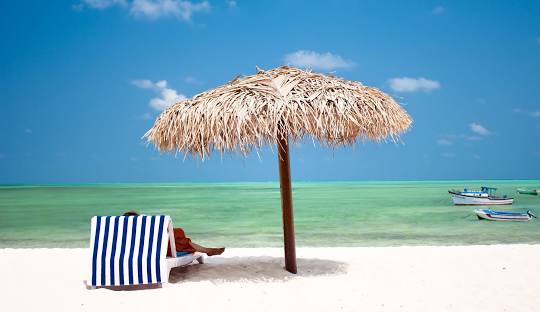
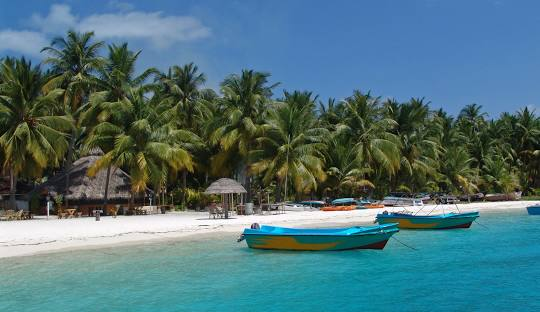
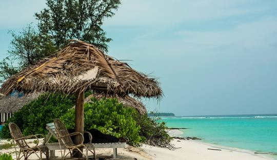

Attractions of Lakshadweep
Agatti Island

Agatti Island: Known for its beautiful coral reefs and clear blue waters, Agatti Island is perfect for snorkeling, scuba diving, and swimming. The island also has an airstrip, making it one of the more accessible islands.
Bangaram Island

Bangaram Island: A popular destination for its serene environment, Bangaram Island offers activities like scuba diving, deep-sea fishing, and sailing. The lagoon around the island is ideal for swimming and snorkeling.
Kadmat Island

Kadmat Island: Famous for its long sandy beaches and clear waters, Kadmat Island is a great spot for water sports such as kayaking, snorkeling, and scuba diving. The island also has a lagoon on one side and a coral reef on the other.
Minicoy Island

Minicoy Island: Known for its unique culture and the largest lagoon in Lakshadweep, Minicoy Island offers beautiful beaches, a lighthouse, and traditional boat building. The island is also famous for its tuna canning factory.